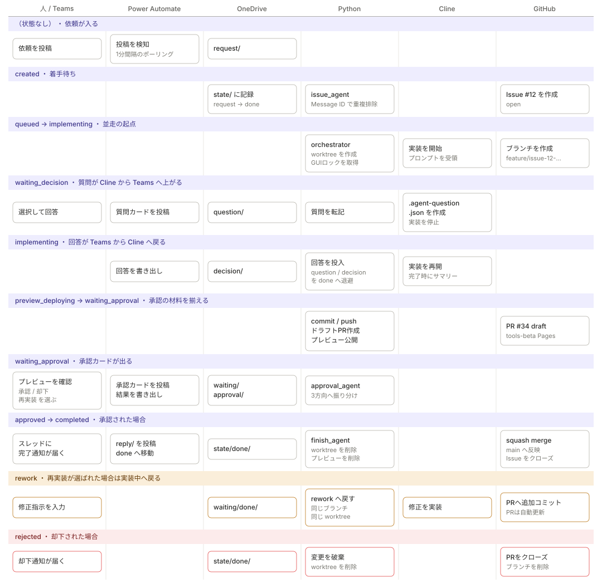

01. アーキテクチャ
1. 全体像
役割分担は次の通りです。
| 担当 | やること | やらないこと |
|---|---|---|
| Teams | 依頼の入力、質問への回答、承認/却下/再実装の判断 | 状態の保持 |
| Power Automate | TeamsとOneDriveの橋渡し（投稿↔JSON） | 業務ロジック、Git操作 |
| OneDrive | 工程間のデータ受け渡しと状態の保存 | 処理 |
| Python | 業務ロジック、Git/GitHub操作、Cline制御 | Teams認証 |
| Cline (VS Code) | コードの実装 | git操作、PR作成 |
| GitHub | ブランチ・PR・レビュー・マージ・Issue管理 | — |
Power AutomateとPythonの間はファイルだけでやり取りします。 どちらかが止まってもJSONが残るので、再起動すれば続きから処理できます。
アクター別の流れと状態
列がアクター、上から下が時間の流れです。
色の帯が state/issue-<N>.json の status、カードがそのとき誰が何をしているかを表します。

この図から読み取ってほしいのは次の3点です。
1. Python列がほぼ全ての帯に埋まっている 業務ロジックをPythonへ集約した結果です。 Power Automate列が飛び飛びなのは健全な状態で、 ここにロジックが増え始めたら設計が崩れている合図です。
2. OneDrive列が必ず2アクターの間に挟まっている TeamsとPythonが直接つながっている行は1つもありません。 だからどちらかが落ちてもJSONが残り、再起動で続きから流れます。
3. 質問と承認は4アクターを跨ぐ
waiting_decision と waiting_approval は
Cline → OneDrive → Power Automate → Teams と往復で8ホップします。
Power Automateのポーリングが1分なので、質問1回で数分が消えます。
体感速度のボトルネックはここです。
rework の帯では worktreeもブランチも同じものを使い回します。
PRが自動更新されるので意図通りですが、再実装の回数に上限が無いため、
同じブランチにコミットが積み上がる点には注意してください
（squash mergeするので最終的な履歴は1コミットにまとまります）。
図は images/actor-swimlane.svg、生成は tools/build_swimlane_svg.py です。
2. OneDriveのフォルダ構成
work/agent/
├── request/ Teams投稿 → Power Automateが作成 → issue_agent が消費
│ └── done/
├── question/ Clineの質問 → Pythonが作成 → Power Automateが消費
│ └── done/
├── decision/ Teamsの回答 → Power Automateが作成 → Pythonが消費
│ └── done/
├── waiting/ 実装完了 → Pythonが作成 → Power Automateが消費
│ └── done/
├── approval/ Teamsの承認結果 → Power Automateが作成 → Pythonが消費
│ └── done/
├── reply/ 通知文 → Pythonが作成 → Power Automateが消費し投稿後doneへ
│ └── done/
├── state/ Issueごとの状態（正本）
│ ├── done/ 完了・却下したIssueの状態
│ ├── locks/ ロックファイル
│ ├── processed/ Teams Message ID の重複防止マーカー
│ └── archive/
└── logs/ エージェントのログ
原則: 各フォルダのJSONは「その工程の伝票」です。
消費したプロセスが責任をもって done/ へ移動します。
| フォルダ | 作る人 | 消費して done へ移す人 |
|---|---|---|
| request | Power Automate ① | issue_agent.py |
| question | implement_agent.py | implement_agent.py（回答受領後） |
| decision | Power Automate ③ | implement_agent.py |
| waiting | implement_agent.py | approval_agent.py / finish_agent.py |
| approval | Power Automate ③ | approval_agent.py |
| reply | Python各所 | Power Automate ④（投稿後） |
3. 状態機械
state/issue-<N>.json の status が唯一の正です。
(Teams投稿)
│
▼
created ──────────────┐
│ │
orchestrator が拾う │ retry
▼ │
queued │
│ │
▼ │
implementing ◄──────────┤
│ ▲ │
│ │ 回答 │
▼ │ │
waiting_decision │
│ │
▼ │
preview_deploying │
│ │
▼ │
waiting_approval │
┌──┼──┐ │
承認 │ │ │ 再実装 ─→ rework ┘
▼ │ ▼
approved│ rejected
│ │ │
▼ │ ▼
completed│ 変更破棄・PRクローズ
│ Issueはopenのまま
│ needs-reworkラベル付与
└ 却下
| status | 意味 | 次に動くもの |
|---|---|---|
created |
Issue作成済み・着手待ち | orchestrator |
queued |
ワーカー起動予約 | implement_agent |
implementing |
Clineが実装中 | implement_agent |
waiting_decision |
Teamsへ質問し回答待ち | Power Automate ③ |
preview_deploying |
tools-betaへ公開中 | deploy_preview |
waiting_approval |
Teams承認待ち | Power Automate ③ |
approved |
承認済み・マージ処理中 | finish_agent |
rework |
差し戻し・再実装待ち | orchestrator |
completed |
マージ＆クローズ完了 | — |
rejected |
却下。ブランチ/PRは破棄するが、GitHub Issue自体はopenのまま needs-rework ラベルを付けて残す |
— |
failed |
異常終了。agent_cli.py retry で戻せる |
人 |
completed と rejected になると state/issue-N.json は state/done/ へ移動します。
rejected はGitHub Issue側はopenのままなので、内容を見直して
再着手したい場合は agent_cli.py retry <N> を実行してください
（state/done/ から state を復元し、created に戻します）。
4. 並走の仕組み
4.1 作業ディレクトリの分離
C:\repo\tools ... 本体クローン（mainを保持、worktreeの親）
C:\repo\worktrees\issue-12 ... Issue #12（feature/issue-12-xxx）
C:\repo\worktrees\issue-13 ... Issue #13（feature/issue-13-yyy）
C:\repo\tools-beta ... 検証用サイト
git worktree を使うことで、1つのクローンから複数のブランチを
同時にチェックアウトできます。git checkout の奪い合いが起きません。
Clineとの制御ファイル（.agent-question.json 等）も各worktree直下に
置かれるため、Issue間で混ざりません。ここが並走できるかどうかの分かれ目です。
4.2 同時実行数の制御
orchestrator.py が AGENT_MAX_PARALLEL（既定3）までの
implement_agent.py 子プロセスを同時に走らせます。
4.3 GUI（Cline）の排他
VS Codeへの貼り付けは物理的に1つずつしかできません。
そこで state/locks/cline-gui.lock によるGUIロックを使い、
貼り付けの瞬間だけ直列化します。
Issue #12 ─ worktree作成 ─[GUIロック]貼付[解放]─ Clineが実装中 ─ 承認待ち
Issue #13 ──── worktree作成 ────────待機───[GUIロック]貼付[解放]─ 実装中
「実装中」「回答待ち」「承認待ち」は並走し、貼り付けだけが順番待ちになります。 実運用では貼り付けは数秒なので、これで十分に並走します。
手動運用にする場合: --manual を付けるとクリップボードへコピーするだけになり、
GUIロックも使いません。複数VS Codeを人が操作する運用に向きます。
4.4 その他のロック
| ロック | ファイル | 目的 |
|---|---|---|
| デーモン | locks/<agent>.lock |
各常駐エージェントの二重起動防止 |
| Issue | locks/issue-<N>.lock |
同一Issueの多重処理防止 |
| GUI | locks/cline-gui.lock |
Cline貼り付けの直列化 |
| tools-beta | locks/tools-beta.lock |
プレビューpushの競合防止 |
いずれも所有プロセスのPIDを記録しており、プロセスが死んでいれば 自動的に回収されます（stale lock対策）。
5. Git運用（GitHub Flow）
main ──●────────────────────────●── (squash merge)
\ /
●──●──● feature/issue-12-add-customer-api
実装 修正
origin/mainからfeature/issue-<N>-<slug>を切る- Clineが実装 → Pythonがコミット＆push
- ドラフトPRを作成（本文に
Closes #N） - tools-beta で動作確認 → Teamsで承認
gh pr ready→gh pr merge --squash --delete-branchCloses #NによりIssueが自動クローズ- プレビューとworktreeを削除
再実装（rework）の場合は同じブランチへコミットを追加するため、 PRは自動で更新されます。
6. 検証環境（tools-beta）
worktree全体（.git と .agent-* 制御ファイルを除く）を
preview/issue-<N>/ 以下へそのまま配置します。
tools-beta/
└── preview/
├── issue-12/ ← worktree全体をコピー（baseブランチ＋変更）
│ ├── index.html ← サイト共通のトップページ（既存ファイル）
│ ├── shared/style.css ← 変更していない共有CSS（そのまま存在）
│ └── customer/index.html ← 今回変更されたファイル
└── issue-13/
└── ...
変更ファイルだけをコピーしません。 worktreeは既に
「baseブランチ＋今回の変更」を含む完全なチェックアウトなので、
ディレクトリ全体をそのまま配置すれば、mainへマージした後と同じ構成になります。
以前は変更ファイルだけをコピーしていたため、変更したページが参照する
既存の共有CSSや画像が欠落し、崩れた状態のまま承認判断をさせてしまう
問題がありました（deploy_preview.py copy_worktree_tree）。
公開URL: https://<owner>.github.io/tools-beta/preview/issue-<N>/
マージまたは却下の時点で preview/issue-<N>/ は自動削除されます。
7. ClineとのJSON契約
Clineには「チャットに書くだけでなくファイルを作る」ことを指示しています。 ファイルはすべてworktree直下、UTF-8 BOMなしです。
| ファイル | 作る側 | 意味 |
|---|---|---|
.agent-question.json |
Cline | 人の判断が必要。作成後は実装を止める |
.agent-summary.json |
Cline | 実装完了報告。これの作成＝完了判定 |
.agent-rework.txt |
Python | 差し戻し時の修正指示 |
これらは .git/info/exclude に自動登録され、コミット対象になりません。
.agent-question.json
{
"type": "cline_question",
"issueNumber": 12,
"questionId": "customer-api-source",
"question": "顧客データの取得元をどうしますか。",
"choices": [
{ "id": "choice_1", "title": "customer.json から読む", "description": "..." },
{ "id": "choice_2", "title": "既存APIを流用する", "description": "..." },
{ "id": "choice_3", "title": "その他（カスタム回答）", "description": "..." }
]
}
.agent-summary.json
{
"issueNumber": 12,
"summaryText": "Teams承認画面に表示する報告の全文",
"implementation": ["実装した内容"],
"verification": ["実際に確認した内容"],
"notPerformed": ["未実施の確認"],
"notes": ["承認者への注意事項"]
}
チャットで途中終了を指示すると、要約が空になることがある。
実環境の検証で、人がClineのチャットへ直接「これ以上の検証は不要です。
ここまでの実装内容で十分です。完了としてください」と送ったところ、
Clineは .agent-summary.json は作成したものの、implementation /
verification を空欄のまま summaryText だけで済ませてしまう事例が
実際に発生した。「打ち切ってよい」という指示を「要約も省略してよい」と
解釈してしまったと考えられる。
_summary_contract()（agent_core/prompt.py）に、打ち切り指示を
受けた場合でも実施内容を必ず記載するよう明記して対応済み。
ただし、これは初回プロンプトに含まれる契約文であり、会話の後半で
Clineがどこまで厳密に従うかは実行のたびに変わりうる。承認カードの
「未実施の確認」欄が空のまま届いた場合は、このパターンを疑うこと。
verification と notPerformed を分けているのは、
「確認したつもり」をそのまま承認画面に出さないためです。